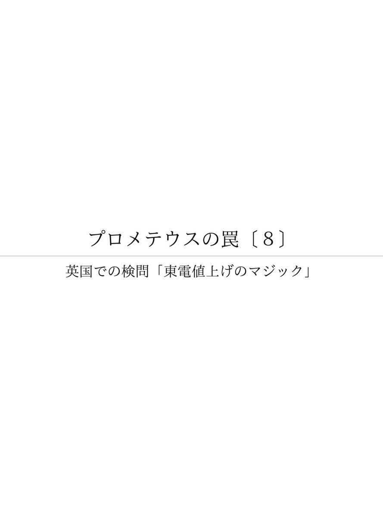

| プロメテウスの罠〔８〕 英国での検問「東電値上げのマジック」 (朝日新聞デジタルＳＥＬＥＣＴ) | |
| 朝日新聞 | |
| (2013) | |
東京電力が計画している家庭向け電気代の値上げ率、これは「数字のマジック」なのではないか――。朝日新聞の好評連載「プロメテウスの罠」の第８シリーズ「英国での検問」は、電気料金の不可解さを見ていく。２０１２年２月２２日から朝日新聞に掲載した全２５回を収録。

内容紹介
東京電力が計画している家庭向け電気代の値上げ率、これは「数字のマジック」なのではないか――。朝日新聞の好評連載「プロメテウスの罠」の第８シリーズ「英国での検問」は、電気料金の不可解さを見ていく。２０１２年２月２２日から朝日新聞に掲載した全２５回を収録。
初出
朝日新聞 二〇一二年二月二十三日～三月十八日
第１章 いきなり警官が
第２章 船主は幽霊会社
第３章 核運搬船に機関砲
第４章 配当率は５０％が基本
第５章 港へ１０キロ、原発道路
第６章 一瞬で雨が蒸発
第７章 残された「お荷物」
第８章 再処理にこだわる
第９章 怖さ、知らなかった
第１０章 ゾウさんとスラリー
第１１章 値のはるＭＯＸ燃料
第１２章 ごみに６３億円払う
第１３章 「節電店長」の怒り
第１４章 「中部電力にかえて」
第１５章 のらりくらりですよ
第１６章 これは威嚇です
第１７章 隣と同じにしてくれ
第１８章 自由化すれば変わる
第１９章 ガス中毒か、感電か
第２０章 送電網めぐり激突
第２１章 値上げ「寝耳に水」
第２２章 変圧する権利ある
第２３章 すべて新顔が落札
第２４章 値上げ率のマジック
第２５章 処分場、ドーム１００個分
近づいてきたパトカーがいきなりサイレンを鳴らし、目の前で止まった。午後４時過ぎだった。
２人の若い警察官が降りて来た。
「写真を撮っていたというのはあなたか」
防弾チョッキ姿。腰ではなく、胸に拳銃と手錠が下がっている。向かい合うといやでも目に入る。
日本から来た新聞記者であることを告げ、名刺を出す。
「パスポートを」
パスポートを渡すと、１人がパトカーに戻って無線で連絡を取りはじめた。１人は私から離れない。
２０１１年１１月、英国西海岸のカンブリア。見渡す限りの牧草地だ。羊たちが草を食べる風景の中に、およそ場違いな巨大な煙突や球形の建造物がそびえている。
セラフィールド。使用済み核燃料の再処理工場だ。ここで日本の原発の使用済み核燃料からプルトニウムを取り出す「再処理」をしている。
６日前、所管する「原子力廃止措置機関」という政府系機関に見学を申し込んだが、断られた。写真だけでも撮ろうと、施設まで来て車を降り、公道から鉄条網のフェンス越しに１０回ほどシャッターを押した。その直後の検問だった。
横に立つ警察官に、何のための検問か尋ねた。
「重要な施設なので、あなたの身分の確認をしている」
なぜ写真を撮ったと分かったか。
「一般の人から通報があった」
公道で写真を撮ることは止められないが、テロ対策のため警戒を厳重にしているのだという。
車から、「日本から来た新聞記者だといっている、どうぞ」と報告の声が聞こえる。
一緒にいる警察官はさかんに話しかけてきた。
米国の同時多発テロいらい警戒が厳しくなったこと。数週間前にも日本人が施設の見学に来たこと......。
パトカーの１人が、上司に尋ねられたことを聞いてくる。
「取材を申し込んだ人と連絡が取れないか」「原子力産業をどう思っているか」
日が暮れかかっている。しばらくしてパトカーの警察官が戻ってきた。「長時間かかって申し訳なかった。行っていい」
そういうとパトカーはセラフィールドの中に消えた。時計を見ると５時。長い検問だった。
ここで取り出されたプルトニウムは、船で日本に運ばれていた。その船会社は東京にあった。
東京に「シーバード」という会社があった。１９９１年設立の船会社だ。９２年暮れから９３年１月にかけ、日本はフランスから船でプルトニウムを運んでいる。それを運んだのはあかつき丸という日本船籍の核燃料輸送船だ。シーバード社はその船主だった。
登記簿によると、最後の住所は「東京都千代田区内幸町１丁目１番地１号、帝国ホテル」となっている。プルトニウム運搬船の船主だというのに、資本金はわずか４０万円。
９３年、日本社会党の参院議員（当時）、翫正敏（いとうまさとし）がシーバード社に関して参院科学技術特別委員会で質問している。
「私が行って調べてみましたけれども、これは簡単にいうとペーパーカンパニーでありまして、幽霊会社、実体のない会社であります」
当時の科学技術庁長官は江田五月だった。江田はこう答弁した。
「なかなか姑息（こそく）なことだという感じもいたしましたが、聞いてみますと、原子力損害の賠償責任のこととか、あるいは警備のこととか......」
プルトニウムは核兵器の材料ともなる物質だ。そんな危険な物質の運搬に際し、海上警備や事故時の賠償のために、日本が責任を持つ形が必要だった。そこでペーパーカンパニーのシーバード社が登場した、というわけだ。
では本当の船主はだれなのか。
それは「パシフィック・ニュークリア・トランスポート」という英国の会社だった。英国の登記簿を調べてみると、シーバードは１００％子会社として登録されていた。
あかつき丸はもともとその会社の持ち船で、「本名」はパシフィック・クレーン号という。この名前では何度も日本に来ている。
さらに調べると、パシフィック社は６２・５％を英国の会社、１２・５％を仏の会社が出資していた。日本では東京電力、関西電力、丸紅、住友商事などが計２５％を出している。
日本企業も出資する英国の会社が、わざわざ日本にシーバード社をつくった。そのペーパーカンパニーの船が、はるばるフランスからプルトニウムを運んできていた。
実は、シーバード社は２０１０年６月に解散した。パシフィック社はあかつき丸の後、日本にプルトニウムを運んでいない。シーバードは「プルトニウムを運ぶため」だけの会社だったのだ。
プルトニウム運搬の実態はどうなっているのだろう。
パシフィック・ニュークリア・トランスポート社は、核物質専門の船会社だ。英国西海岸カンブリア州のバロー港を母港にしている。
バロー港には「環境の放射能汚染に反対するカンブリア人の会」という民間団体がある。その代表、マーチン・フォーウッド（７１）は、２５年以上にわたって核物質輸送船を監視してきた。
マーチンによれば、パシフィック社の核運搬船は４隻ある。英国と日本、フランスと日本の往復がほとんどだという。
目の前に「パシフィック・ヘロン号」と書かれた船が接岸していた。
「あの灰色のカバーをかけてあるのは機関砲です」
一見ふつうの貨物船だが、核ジャックに備えて武装しているのだという。
「船体は二重で、エンジンは片方が故障しても航行を続けられるように、二つあります」
核物質を運ぶパシフィック社の船は、航行途中の国々に嫌われている。そのため日本まで約２カ月の航海中、一度も寄港しない。万一に備えた装備は充実している。
日本の原発で使った核燃料を英仏で再処理する。その契約は１９７７年に結ばれた。
８０年代に入ると、パシフィック社の船は毎月のように日本の港に姿を現した。原発がある港だ。
日本で積まれた使用済み核燃料がバロー港に荷揚げされると、北に約４０キロ離れた再処理施設、セラフィールドまで鉄道で運ばれた。
セラフィールドに日本の使用済み核燃料を運ぶことに反対するマーチンは、列車が出る港のゲートに鎖で体を縛り付けたこともある。
「そんなことで止められないことはわかっている。でも、日本から使用済み燃料を持ち込むことに抗議していることを知ってほしかった」
その使用済み燃料の受け入れは２００１年に終わる。今度は、処理済みの高レベル廃棄物を日本に返還する航海が９５年から始まった。
プルトニウムの輸送は９３年のあかつき丸が最後で、９９年からＭＯＸ燃料の運搬が始まった。ウランとプルトニウムを混ぜ合わせた核燃料だ。航海は年に１～２回だけだ。
にもかかわらずパシフィック社の年間売上高は約２千万ポンド（約２６億円）もあり、年１００万ポンド前後（約１・３億円）の利益を出し続けている。なぜなのか。同社に取材を申し入れた。
パシフィック・ニュークリア・トランスポート社はセラフィールド再処理施設の北１０キロほどが住所だ。
ホームページから取材を申し込んだ。すると「インターナショナル・ニュークリア・サービス」（ＩＮＳ）という会社から取材に応じるという返事が来た。
パシフィック社の６２・５％の株を持つ会社で、場所は本社住所の南約１４０キロにあるという。電車を乗り継いでＩＮＳに向かった。
広い敷地に４階建てのビルがある。案内板には原子力関係の会社が名前を連ねていた。
ＩＮＳ広報部長のベン・トッドが出てきた。
パシフィック社はこのところ、主な収入源である日本への輸送は年間１、２回しかない。それでも安定した利益が出ているのはなぜか。
「そういう内容の契約になっているためです」
契約内容を尋ねたが、守秘義務があるので明かせないという。
同社の決算報告書を見ると、「原価に管理手数料を上乗せして支払われる」と書いてある。
つまり、運んだ回数や売り上げに関係なく、人件費や燃料費、維持費など、かかった全費用に利益を上乗せした金額を請求すれば、確実に支払ってもらえるという仕組みだ。
「事業の成功は、世界で最も信頼され、規模の大きい核物質運搬会社だからです」
では、プルトニウム運搬船「あかつき丸」を保有した「シーバード」はなぜ解散したのか。
「パシフィック社所有の英国船を日本船にするために設立された会社です。プルトニウム運搬がなくなった後は使われず、２０１０年の事業整理で閉鎖されました」
シーバード社はオフィスの実態がなかった。まさにペーパーカンパニーではないか。
「パシフィック社だってオフィスはありませんよ。ＩＮＳが運営しています。それを私たちはペーパーカンパニーとは呼びません」
パシフィック社には東京電力や関西電力など日英仏の原子力関連企業が計２００万ポンド（約２・６億円）を出資している。配当率は５０％が基本。すごい高率だ。２年で元が取れてしまう。古い船の売却益が出て１２０％の配当をしたこともある。
日本の電力会社が、自分たちが投資した核物質運搬会社にぜいたくな支払いをして、高率の配当を得る。どういう仕組みなのか。
核物質運搬会社パシフィック・ニュークリア・トランスポートは、かかった費用に管理費を上乗せして請求できるため、運搬回数が減っても経営は安定している。
それとまさに同様なのが、電気料金の「総括原価方式」だ。原価プラス利益の支払いが保証される。払うのは電力消費者だ。
静岡県御前崎の断崖に立つ御前崎灯台。目の前には太平洋を遠く見渡すことができる。
案内してくれた静岡県牧之原市のお茶農家、増田勝（まさる）（５５）が「これが『原発道路』ですよ」と指さす。下を見ると、波打ち際を縁取るように１本の道路が走っていた。
中部電力の浜岡原子力発電所から灯台の下を通って御前崎港まで約１０キロ。中部電力が整備し、県道として移管された。国内の他の原発は専用港を持つが、浜岡は砂浜なので港が造れず、道路が必要になった。
１９７７年、日本と英仏の事業者間で、使用済み核燃料の「再処理」の契約が結ばれる。すると、この道路は浜岡原発で使われた核燃料を御前崎港まで運ぶ搬出路になった。
搬出の前には、大動員された警察官が道路周辺を徹底的に調べる。当日になると、盾を持った機動隊員が沿道に立つ中、大型トレーラーに積まれた輸送用キャスクが、歩くぐらいの速さで通っていく。
大学を終えて地元に戻り、お茶栽培を始めていた増田は、原発反対運動に加わる。沿道で輸送反対を大声で叫んだ。
後に、中部電力などは使用済み燃料用に輸送車を開発した。運送会社によると、最大積載量１３５トンの核燃料専用車が６台あり、１台が約１億円はするという。
土木関係者によると、往復２車線の県道を造った場合、いまだと普通で１メートル１００万円程度はかかる。１０キロで１００億円にもなる。
御前崎港についた使用済み核燃料は、パシフィック社が運び出した。
英仏に運ばれた使用済み核燃料は再処理され、プルトニウムが取り出される。プルトニウムは燃料として再利用するという想定で、またパシフィック社の船で日本に戻る。
プルトニウムは、発電に使うことで増え続けるはずの「高速増殖炉」で使うことを想定していた。しかし、安全性の確保ができず、稼働の見通しさえ立っていない。そんなことはお構いなしに、地球をまたにかけた再処理の費用は、電気代の原価に盛り込まれていく。
輸送用キャスクに雨があたると、一瞬で水蒸気があがった。
１９９５年４月、青森県のむつ小川原港。使用済み核燃料の再処理に反対してフェンスの外に集まっていた数百人の人たちが驚いて、どよめきが起きた。車の屋根で待ち構えていた映像作家の島田恵（けい）（５３）は夢中でシャッターを切った。
キャスクの中身は、フランスで再処理されて送り返されてきた「高レベル放射性廃棄物」。プルトニウムだけでなく、再処理で発生する「ごみ」も戻る契約になっている。
日本からの使用済み核燃料の英仏への輸送は７８年に始まった。再処理で、高レベル放射性廃棄物が帰ってくるのはこの時が最初だった。
高レベル廃棄物はガラスと混ぜ合わせてキャニスターと呼ばれるステンレスの容器に詰められる。ガラス固化体という。大量の放射性物質が詰まり、核分裂は続いている。
この時は、ガラス固化体２８本がひとつのキャスクに詰められて戻ってきた。
島田はいう。
「キャスクにあたった雨が一瞬で蒸発するわけですから、中にあるガラス固化体はもっと熱い。最終処分の前に何十年も厳重に保管して冷やさないといけないものです」
２回目のガラス固化体の運送は９７年で、フランスから４０本。こうしてフランスからは２００７年までに計１３１０本が戻った。英国から返還が始まったのは１０年から。８５０本が予定されているが、まだ１０４本しか戻っていない。
英国のセラフィールドにある日本向け再処理工場が稼働したのは９４年だった。しかし０５年、放射性溶液が漏れる大きな事故が表面化する。運営の「英国核燃料会社」（ＢＮＦＬ）は解体され、英国は自国内の原発の使用済み核燃料再処理をやめることを決めた。
取り出したプルトニウムは、「高速増殖炉」で増やしながら発電することを目指していたが、実用化のめどがたっていない。そこで、別の工場でウランと混ぜ、通常の原子炉で燃やすことができるＭＯＸ燃料に加工されて日本に運ばれてきた。
ところが、今回の東京電力福島原発事故で、ＭＯＸ燃料を使うはずだった日本各地の原発も止まった。
ＢＮＦＬを引き継いだ「原子力廃止措置機関」は、日本向けＭＯＸ工場の閉鎖の方針を１１年８月に決めた。プルトニウムは英国に取り残されることになった。
英国の「原子力廃止措置機関」（ＮＤＡ）が２０１１年８月、ＭＯＸ燃料の日本向け工場を閉鎖する方針を決めたのは、中部電力の浜岡原発の運転停止が引き金だった。
ＭＯＸというのはプルトニウムとウランを混ぜたもので、高速増殖炉ではなく普通の原子炉で燃やせる。ＮＤＡの広報部長、ブライアン・ホフはいう。
「最初の納入予定は浜岡原発でした。その運転再開のめどが立たないため閉鎖しました」
ＮＤＡの判断は、浜岡原発が止まって３カ月後だった。ずいぶん早い対応だが、判断は正しかった。
１２年１月、横浜市で開かれた「脱原発世界会議」。浜岡原発がある静岡県御前崎市の隣の牧之原市市長、西原茂樹（５７）はこう述べた。
「原発からは雇用や経済で恩恵も受けました。しかし福島原発事故を見てしまったら、誰だって原発は止めたいと思います」
１１年９月、牧之原市議会は浜岡原発の「永久停止」を決議している。
牧之原市で原発に反対してきたお茶農家の増田勝（５５）はいう。
「西原市長は推進派だった。しかし福島原発事故で変わった」
自動車メーカーのスズキが原発事故後、市内の工場を他地区に分散するといい出した。それも市長の決断を促した。
静岡県内では、三島市や吉田町の議会が廃炉を決議するなどの動きが広がっている。増田はいう。
「以前なら、立地自治体以外の意見は無視できた。しかし福島の事故では３０キロ圏まで避難が広がり、そのほかでも工場や農業に大きな被害が出た。今後はそうはいかない」
英国のＭＯＸ工場は閉鎖された。問題は、英仏に残る約２３トンのプルトニウム。日本の使用済み核燃料から取り出したものだ。ＮＤＡ広報部長のブライアンはいう。
「日本の電力会社との契約で、セラフィールドのプルトニウムはそのまま保管することができます」
電気事業連合会が０４年にまとめた使用済み核燃料の保管費用についての報告書がある。それによると、２・４万トンの使用済み核燃料を３７年間保管するのに保管場所や保管容器などで約１兆円かかるという。
危険度がはるかに高いプルトニウムとなると、こんな額ですむはずがない。
プルトニウムは再利用どころか、電気代のさらなるかさ上げを引き起こす「不良債権」だった。
新潟県刈羽村で、東京電力の柏崎刈羽原発に反対してきた農家の武本和幸（６２）がいう。
「使用済み核燃料の保管の問題を考えると、原発が止まってほっとした電力関係者もいるでしょう」
使用済み核燃料の集合体は「プール」に保管される。福島原発の水素爆発で、建屋の高いところに姿を現した、あれのことだ。
柏崎刈羽は、１１年９月末、この使用割合が約８４％に達した。７基ある保管のプールは計２万２４７９体を納められるが、すでに１万３３３６体入っている。点検の際に使用中の５５６４体を移す必要があるため、あと３５７９体しか入らない。
２００７年の中越沖地震で止まる前は、年間５００体以上が使用済みとなった。その調子でいくと、７年であふれるところだった。
使用済み核燃料は、直接廃棄するか、再処理するかの方法がある。日本は再処理の道を選んだ。そのため使用済み燃料は保管され続ける。
核燃料の再処理は問題が多い。英国はすでに、やめる決断をした。しかし、日本は再処理にこだわる。
青森県にある日本原燃の六ケ所再処理工場は当初９７年だった完成予定を何度も延期してきた。１２年１月にも本格稼働を前にした試験運転をしようとして装置の不具合が起きた。
原発ウオッチを続けるＮＧＯの「原子力資料情報室」（東京都新宿区）の沢井正子は「予想通りの不具合が発生した。できたらいいなという期待で続けているだけ。中世の錬金術師のようなものです」。
増え続ける使用済み燃料に目をつけた自治体もある。
柏崎市は０３年度、１キロあたり４８０円課税することにした。０４年度には４・６億円の税収があった。それが１１年度には５・９億円と、１億円以上も増えた。
「核燃料税」はすでにあった。道や県が新しい燃料が入るたびに課税し、地元市町村に配分する。しかしこれは原発が止まると税収がなくなる。しかし「使用済み税」は原発の運転と関係なく入ってくる。
川内（せんだい）原発がある鹿児島県薩摩川内市も０４年に導入し、毎年税収が増えている。敦賀原発のある福井県敦賀市も、１１年６月の市議会で検討を表明した。
「再処理」を唱え続ける日本。そのための費用ばかりがかさむ。
１１年３月の福島原発事故の後、原子炉の建屋に入り、使用済み核燃料プールを見た男がいた。
首相補佐官だった馬淵澄夫（５１）は２０１１年６月１１日、東京電力の作業員とともに、福島第一原発４号機の建屋に入った。
中は真っ暗だった。天井を見上げて「この上に使用済み核燃料プールがある」と考えると、なんともいえない圧迫感があった。
馬淵は官邸で、原発の放射能漏れを封じるプロジェクトを担当していた。建屋に入ったのは、４号機の使用済みプールの崩壊を防ぐ補強工事の確認のためだった。
東日本大震災の時、４号機は定期点検中で止まっていた。止まっていたことは「安全」を意味しない。定期点検するためには、いったん原子炉を止めて、使用中の核燃料を外に出す必要がある。
使用済みプールには「カッカッカと燃えている核燃料」（馬淵）を、一時的に保管する役割もある。
燃料棒をプールに入れるのは、水が危険な中性子を遮るためだ。水から出せないため、燃料棒は、原子炉とプールをつなぐ水路の中を移動させる。だから、プールは、原子炉の入り口に近い高い場所にある。
しかし、余震などでプールが壊れると、燃料を浸す水がなくなる。そうなれば再臨界を起こしてしまう。馬淵はそれを防ぐ工事を指揮した。
４号機のプールには、核燃料集合体１５９０体が入れられる。底は厚さ４メートルのコンクリートだ。だが、大きな余震に耐えられる保証はない。そこで、下に鋼鉄の支柱を何本も入れ、コンクリートも加えて固めた。
馬淵は振り返る。
「使用済み核燃料プールなんてものは知らなかった。こんなに怖いものだということも。しかも全国のすべての原子炉にある。今回のようなことで大事故になりかねない」
馬淵は１１年８月、民主党代表選に立候補した。そこで、原発の「バックエンド問題」を訴えた。それは６月の圧迫感がもとになった。
「バックエンド」とは、使用済み核燃料をはじめとした原発の後始末だ。これを考えずに、電力需要への対応が優先され、どんどん原発がつくられた。
「再処理が建前だから使用済み核燃料は保管する。しかし実際には再処理はできていない。排出物はたまり続ける。まさに『トイレなきマンション』なのです」
代表選に敗れた馬淵は、民主党有志で「原子力バックエンド問題勉強会」を立ち上げる。背景には「最悪のシナリオ」があった。
首相補佐官だった馬淵澄夫（５１）は１１年４月、官邸で「最悪シナリオ」の対策を任された。
骨子は「福島第一原発４号機で、使用済み核燃料プールの燃料が溶け出すと、半径２５０キロの避難もありえる」というものだった。
「２５０キロの避難ということは、首都圏が全部対象になる。日本が機能不全になる、ということです」
想定は（１）１号機の原子炉容器または格納容器内で水素爆発（２）２、３号機の注水ストップ（３）４号機プールの注水も止まり、燃料が損傷、溶融が始まる――と進む。
この連鎖を断つために馬淵が採用したのは「スラリー」だった。
砂と水を混ぜた泥。むき出しになってしまった炉心に流し込めるようにしたものだ。
原子炉の近くは危険で作業ができない。そこで、スラリーの製造装置から１～４号機までを１１００～１３００メートルの配管でつなぐ。
その先は生コン圧送機だ。プールへの注水で使われた、「ゾウさん」と呼ばれる機械。これで原子炉に放り込む。「ゾウさん」は無線操縦するが、人が運転することも考えて運転席を放射線を遮る鉛で覆った。
「泥で閉じ込める。チェルノブイリの石棺と同じことです」
１１年５月には、これを第二原発で動かす実験をした。いま、第一原発にはスラリーのもとになる砂が、ダンプカー約２２０台分、積まれている。ゾウさんも待機する。
今回の原発事故で、東京電力は実質的に経営破綻（はたん）した。このうえ、使用済み核燃料プールで「最悪シナリオ」が生じたら、損害は一電力会社の破綻の比ではない。しかも使用済みプールは、各地の原発に必ず設置されているのだ。
馬淵はいう。
「使用済み核燃料は、それを再処理するという建前があるから保管している。しかし再処理がフィクションであることは明らかです」
馬淵の「バックエンド問題勉強会」はこの２月、第１次提言をまとめて民主党政調会に提案した。
そのポイントは、電力の「受益者と負担者の公平性」だ。
「私の地元の奈良県が電力を使うと、福井県にある使用済み核燃料が増える。たとえば受益の各都市が、使用電力に応じて使用済み核燃料を引き受けるようにする。そうすれば使うことから考える発想は変わる」
実現すれば、東京は使用済み核燃料の一大集積地になる。
ウラン燃料の価格は公表されていない。原子力発電所で使われる核燃料はいくらぐらいするのか。
福井県高浜町の農業、池野正治（６１）は１０年以上、それを追いかけてきた。
分かってきたのは、ＭＯＸ燃料がウラン燃料の７～８倍という高額であることだ。ＭＯＸというのは、プルトニウムとウランを混ぜて一般の原子炉で燃やす燃料のことだ。この価格は貿易統計から把握できる。
２００９年春にパシフィック・ニュークリア・トランスポートのパシフィック・ヘロン号が、フランスから中部電力浜岡原発（静岡県）に運んだＭＯＸの燃料集合体は１体約２６０キロで、約３・３億円だった。
四国電力伊方原発（愛媛県）と九州電力玄海原発（佐賀県）に運んだ分は同６７０キロで９億円弱だ。
池野は、通常のウラン燃料の価格を、福井県の核燃料税から推計している。税額から逆算できる。今の税率は１７％だ。
１０年度に大飯３号機に入った燃料は１体約６７０キロで推計約１億９００万円だ。敦賀２号機は同じサイズで約１億２４００万円である。やや価格が違う。
「燃料は長期で契約することが多い。契約した時期と製造元で違いが出るのでしょう」
いずれにしても、ＭＯＸ燃料は７～８倍である。
ＭＯＸ燃料は、２０１０年にもヘロン号がフランスから、玄海と関西電力の高浜原発（福井県）に運んだ。このときは玄海が１体約７・５億円だった。高浜は約８・８億円で前年と同水準だった。
池野は「玄海は２０体で、高浜は１２体だった。１体あたりの運賃の差かもしれない」。
ヘロン号の輸送には、２年続けてパシフィック・ピンテール号が一緒に航行している。
パシフィック社のホームページによると、プルトニウムを含むＭＯＸが奪われないよう、相互に護衛するためだという。それぞれの船が３０ミリ機関砲３門を備えており、武装した英国の警察隊が乗り込んでいる。
この警察は「民間核施設警察隊」と呼ばれる。核関連施設の警備に特化した訓練を受けている。
武装した護衛や専門の運搬船に護衛船をつける安全対策は、ＭＯＸ燃料輸送の日米協定に基づいている。
ＭＯＸの高い代金にはもちろん、こうした護衛船の料金も入っているのだ。
「核のごみ」に、電力会社は、２０１１年だけで約６３億７千万円も支払っていた。
日本から英仏に運んだ使用済み核燃料は、再処理されてプルトニウムが取り出される。その際、高レベル廃棄物も出る。それはガラスで固められ、重さ約５００キロの「ガラス固化体」となる。
キャニスターに入れられたこのガラス固化体は、放射性物質の崩壊熱によって高熱を発している。もちろん放射能が強く、近寄ることはできない。
青森県の六ケ所村での中間貯蔵をへて、地下深く埋められる予定だが、その場所が決まっていない。やっかいなごみなのである。
１１年９月、英国の核物質運搬船パシフィック・グリーブ号は、その「高レベル廃棄物」を、青森県のむつ小川原港に運んできた。ガラス固化体が７６本あった。
それを関西電力、九州電力、四国電力が「輸入」する形で引き取った。函館税関に申告したのが冒頭の金額だった。１本が約８３７９万円もする。
各電力会社の広報担当に、価格の算定根拠を聞いた。
「これまでに支払った処理費用と輸送費などの合計額です」。各社、同じ回答をしてきた。
ガラス固化体の返還が始まったのは１９９５年、仏からだった。
最初は２８本で約１２億４千万円。１本平均は約４４３７万円だ。０７年までに１３１０本が戻り、合計額は約７５５億円にのぼった。平均約５７６１万円となる。
英からの返還は１０年に始まる。合計１０４本で、平均約８７８７万円と、仏の１・５倍だ。
この「５割アップ」について各電力会社に聞いたが、また各社で同じ回答が返ってきた。
「契約の中身にかかわることなので答えられません」
電力会社は「ごみ」に金を払って輸入している。ということは、それに課税されるわけだ。税関当局によると、関税はかからないが消費税はかかるという。
核燃料のリサイクルというたてまえで、ごみに高い金額を支払う。その処理にまた巨額の費用がかかる。こうした費用はすべて電気代に上乗せされていく。
こんな費用を使う一方、東京電力はスーパーやマンション管理組合に、１２年４月からの電気料金値上げ１７％を通告している。
１２年１月下旬、山梨県のある中堅スーパーが、東京電力から「電気代の１７％アップ」を通告された。
南アルプス市の店長、那須昭元（あきもと）（５５）は怒る。
「このあたりはスーパーの激戦区なので、簡単に値上げなんてできません。利益だって１～２％しかない。それを１２年４月からいきなり、１７％も値上げする、と。この値上げで赤字になる店も出るでしょうね」
那須が怒るのは、福島原発事故以来、細かい気配りを積み重ねて節電に協力してきたからだ。
たとえば「デマンド注意警報」。店の使用電力量が多くなると、店長の携帯電話に警告メールが入る。
１２年２月中も、那須の携帯は何度も鳴った。寒さで暖房の電力量が増えてしまったのだ。暖房温度を下げると客足に響く。那須は、あわてて野菜や豆腐、牛乳などを並べている冷蔵ケースの電源を切りに走った。
スーパーの冷蔵、冷凍ケースにはふつうスイッチがない。電源を切ることが基本的にないからだ。福島原発事故後の節電に協力するため、冷蔵庫ごとにつけた。
「デマンド」とは、瞬間的な電力使用量のことだ。福島の事故で東電の供給能力が落ちた。それに配慮し、利用者側がみずから警報装置まで導入して使用電力を下げる努力をしてきた。
那須の店ではスイッチのほか、電源を切っても生鮮食品が傷まないように保冷剤を購入したり、停電に備えて自家発電を導入したりした。そうした投資に１１０万円もかかっている。
２０１１年夏、電気代を節約するために冷凍食品の販売を減らした。そのため冷凍食品は前年比３０％の売り上げ減となった。いまも冷凍食品ケースの照明は消してある。
店の裏手にある大冷蔵庫も、節電のために電源を切った。そのため生鮮食品の余分な在庫はない。商品が売り切れたら販売機会を逃すことになるが、しかたがない。１ワットずつ積み上げていくような節電だった。
那須の店の電気代は月に約１４０万円だ。それを１７％値上げされたら、毎月二十数万円が飛んでいってしまう。
「これだけ協力したのに、なぜ東電が起こした事故の犠牲にならなければいけないのですか」
山梨県の小売店で作る「山梨流通研究会」は１２年３月６日、県内の消費者団体と連名で、東電などに値上げ再考を要請する。
「山梨は長野・静岡と県境を接しています。これが何を意味するかわかりますか」
山梨のスーパーなどがつくっている「山梨流通研究会」事務局長、内藤学（６１）はいった。
「長野、静岡には中部電力がきています。東京電力に１７％も値上げされたら、電気料金に圧倒的な差が出る。お客さんに県境はありません。山梨県に店があるだけで不利になります」
生鮮食品を扱うスーパーは大きな冷蔵庫のようなものだ。当然、電気代がコストに占める割合は大きい。山梨のあるスーパーチェーンの場合、約５２億円の年間売上高に対して電気代は約９千万円に及ぶ。
内藤は、東電の値上げ問題を、消費者団体「あしたの山梨を創る生活運動協会」会長の飯窪（いいくぼ）さかえ（８２）に訴えた。
飯窪とは、２００８年に「レジ袋の有料化」を始めたことで信頼関係があった。山梨のマイバッグ普及率は８割を超えている。
飯窪はすぐに理解した。
「これは生活必需品の値上がりに直結します。東電は値上げを避けるための努力を十分にしているとはいえません」
売る側と買う側の共闘が成立した。１２年３月６日、東電や山梨県に、連名で「値上げを再考してほしい」との要望書を出した。
内藤はいう。
「自由化料金といいながら、一律の値上げで、１２年４月から、と一方的に通告してきた。値上げの根拠も具体的に示さない。値上げを強行するのであれば公正取引委員会に申告することも考えています」
要望書は（１）まず東電の資産を売却する（２）山梨県を中部電力の供給エリアにする（３）せめて、東電以外から電力が買える環境を整える――といった提案もしている。
「山梨県が中部電力からも電気が買えるようになれば、東電の供給力不足の解消にもつながる。一石二鳥の案です。政府にも真剣に検討してほしい」
スーパー関係者はいう。
「電気を止められると営業できなくなる。電力会社は私たちには怖い存在なのです。山梨は団結しているから行動できる」
電力供給の実質独占が続く限り電気料金は一方的に値上げできる。その金は再処理などにつぎ込んでも、パーティー券を大量に買っても「企業の秘密」で通るのだ。
山梨県のスーパー業界は、東京電力の独占にかみついた。だが、それより１０年も前、たった１人で電力会社や経済産業省と激しくやり合った男がいる。日本ボランタリーチェーン協会の会長、林信太郎だ。林は２００８年、８７歳で死去した。
協会は小売りチェーン店の団体だ。当時、食品やドラッグストアなどのチェーンストア約１３０社が加盟し、店舗数で約６万店あった。
林は旧通産省出身でありながら、電力独占を攻撃し続けた。しかし０３年２月、協会幹部の説得で会長の職を辞任した。説得に当たった幹部はいう。
「会長を尊敬していました。しかしこのままだと協会の存亡に関わると思った。経産省をはじめ、いろいろなところから、会長を辞めさせるよう強い圧力があって」
林は７４年に旧通産省の立地公害局長の時に天下り人事を拒否。官房付に降格された後、退職した。ジャスコ（現イオン）の社長だった岡田卓也に請われて、７６年に同社の副社長になった。その後、ジャスコの副会長を経て、ボランタリーチェーン協会の会長となる。
００年３月、電気料金の一部が自由化された。大手流通の料金は１０～１５％も値下がりし、料金は１キロワット時平均で約１８円となった。
中小店も値下げはあった。しかしその率は１～３％と小さく、平均は約２３円。大手と５円も差がある。
各地方の電力会社に交渉団を送り、値下げを要請した。経産省や公正取引委員会にも頻繁に出向く。国会議員にも陳情攻勢をかけた。
林の怒りが高まる。とくに、電力会社と関係の深い経産省に怒りの矛先が向いた。
０１年９月７日、林ら協会幹部７人が経産省資源エネルギー庁で、電力・ガス事業部長（当時）の迎（むかえ）陽一と交渉する。林は訴えた。
「われわれは節電や自家発電など血のにじむような努力を積み重ねてきましたが、一部自由化でライバルの大手だけが値下げとなり、努力は一気に吹き飛びました」
その交渉の議事録がある。
林「行政のポイントは分かりますよ、（私も）３０年やっとったんですから。そういう過去がありながら、今のようにのらりくらりやっとったんでは......」
迎「のらりくらりだなんて」
林「いや、のらりくらりですよ。はっきりしないんですから」
容赦ない攻撃だった。
日本ボランタリーチェーン協会の会長、林信太郎（故人）は、資源エネルギー庁の電力・ガス事業部長、迎（むかえ）陽一との交渉に先立つ２００１年８月、電気代の値下げを求めて東北電力、東京電力、中部電力の電力３社を訪れている。
協会側の記録だと、電力会社の対応は屈辱的なものだったらしい。
Ａ電力（原文実名）は全員を応接に通さず、１時間と制限をつけた。
Ｂ電力は社員食堂の横の集会場で対応した。
Ｃ電力は、実態調査の資料を郵送すると約束しながら、何度催促しても返事がなかった――。
林は電力各社の高飛車な対応への怒りを、迎にぶつけた。
Ａ電力の取締役が地元スーパーを「表敬」で訪れたことがある。取締役は「ボランタリーチェーンの電気を止めてやろうとか、お前らだけ高くしてやろう、などとはいいませんが」といった。林はそれを取り上げた。
「これは威嚇です」
「電気は止められたら商売できない。だから、本当にいわれる通りにしてきたんです。独占がこういうことを冗談でもいうことはひどい。こんなことは売り手買い手の中で絶対にありえないことです」
林は、電力供給の独占体質に強く反発していた。売り手がふんぞり返り、電気料金が一方的に決められていく。林は食い下がった。
林「なんでそんなもの認可されるんですか。しかも９電力同じで。とんでもないことです」
迎「ただね、われわれもね、それで認可をずっとしてきたんだし」
林「経産省に責任があります」
迎「いや、責任があるといわれるかもしれないですが、去年の値下げについてもそういう区分でやったことを、われわれはおかしいという立場ではないんでね。ご意見はご意見として承りますが」
林「こんな不景気でね、倒産が相次ぐ中、現実に金を払わされておるんですよ。そんな悠長なことと違うんですよ。私も（通産省）ＯＢですからね、こういう交渉は抑えに抑えてきたんですよ。しかし調べれば調べるほどひどい」
当時の加盟会社役員は振り返る。
「われわれは電力は供給していただくものと考えていた。林さんは、電力は買うもので、われわれは消費者だという考えだった」
林がこだわったのは電力料金の「士農工商」だった。
電気料金は、企業と家庭では格差がある。それは広く知られている。
しかし企業利用者の間にもさまざまな差がある。その料金は公開されておらず、電力会社と企業の個別交渉で決まっていく。
日本ボランタリーチェーン協会の林信太郎（故人）らの２００１年当時の調査によると、その中身はざっと以下のようなものだった。
当時の電気料金は「大口の工場」で１キロワット時あたり平均約１２円だった。
「大口の商店」は同１８円。１・５倍だ。
「小口の工場」は同１４円。
「小口の商店」は同２３円。
林は０１年９月、資源エネルギー庁電力・ガス事業部長の迎（むかえ）陽一と交渉したとき、その点も持ち出した。
「補助金をくれとかそんなんじゃないんです。隣の工場とキロワットアワーの単価を同じにしてくれというだけですよ」
価格差をなくすために電気事業法に基づく認可申請の「変更命令」をすぐに出すよう求めた。
「大口」と「小口」の格差だけでなく、小売業には工場と別の体系が適用されている。そんな電気料金制度にも、林の議論は及んだ。
なぜ体系が別なのか。業界内にはそれを差別ととらえ、「電気料金の士農工商」と、江戸時代の差別的身分制度になぞらえる言葉まである。
体系はさらに、超大口である「特別高圧」、大口の「高圧」、一般の「低圧」と分けられる。
そして使用規模に応じた料金体系とは別に、利用者の形態による区分がある。オフィスビル、小売店、学校などが対象になる「業務用」。家庭用の「電灯料金」。その区分ごとに、さらにまた料金が違う。
そうした料金を、電力会社は相手の顔を見て決めていくわけだ。
しかし、林の追及にも迎はほとんど応じなかった。
「ただちに是正命令を出せ、区分の見直しをとのことですが、全体の制度の中でどの方向がいいのかということは、私たちも問題意識として持っています」
そして０３年、林は外圧の中で会長職の辞任に追い込まれるのである。
経産省によると、全国の電力会社に常勤の役員や顧問として天下ったＯＢは過去５０年間で６８人いる。２０１１年の震災前にも、資源エネルギー庁長官が東電の顧問に天下って批判を呼んだ。経産省と電力会社は密接につながっている。
大阪市中心部にある関西電力本社の高層ビル。一般エレベーターは３５階までしか行かないが、最上階の３６階には直通エレベーターがある。
日本ボランタリーチェーン協会の林信太郎が２００１年当時、電力料金の格差をめぐって激しく攻め立てた経済産業省の迎（むかえ）陽一はいま、この３６階、役員フロアが職場だ。
０４年に商務流通審議官に転じた後、５４歳で勇退、商工中金の理事になる。その２年後の０８年８月に関西電力顧問に転じ、０９年６月の株主総会で常務に就任した。
３６階の役員室は広い。大きな窓からは大阪平野が見渡せる。ゆったりとした執務室で、迎が口を開く。
「戦後は（外貨を稼ぐ産業に資源を集める）傾斜生産みたいなことがある時代だった。その後、料金改定を何度もやるんだけど、経産省も抜本的に直すことをしなかった。経産省も産業官庁だから」
しかし、商工格差への不満は高まってくる。その急先鋒（せんぽう）だった林とのやり取りを振り返る中で、迎は「自由化」という言葉を出した。
「林信太郎が画期的な新説を述べたわけではない。ぼくは、そういうものも含めて、電力自由化の中で是正されればいいと思っていた」
電力自由化とは、その名の通り利用者が電力会社を選べるようにすること。自由に選べれば価格も交渉で下がる可能性がある。
林とやり合っていた当時、自由化への期待は高まっていた。
９５年、電力会社以外による発電事業が認められた。００年には大規模工場や大型ビル、病院などに対する超大口の電力小売りが自由化された。大口電力の自由化も当然となり、さらに小口にまで自由化が広がる勢いがあった。それを先取りするように電力料金の値下げも進んでいた。
迎が就いていた資源エネルギー庁電力・ガス事業部長のポストは、経産省キャリア官僚にとって「経済界への顔見せポスト」とされる。話をする相手は電力会社の常務クラス。官房長、事務次官と出世するにつれて、相手も社長、会長と変わる。
そうやって両者の間には濃密な関係が築かれていた。が、電力自由化は徐々に進む。電力会社側から見ると、自由化は経営基盤を揺るがすものだ。警戒すべきその自由化が、０２年ごろから少しずつ減速する。
背景には電力会社の攻勢があったとされる。経産省は、幹部だけでなく末端の官僚まで、さまざまな攻勢にさらされていた。
１９９８年のある夜、資源エネルギー庁の電力担当課に属する係長が電力業界の人間と銀座で飲んだ。
翌日、その係長は電力会社内の情報源から、「あの係長はガス中毒」と書かれたメールを見せられた。
銀座のクラブでしゃべったことが細かく文章にされ、電力９社の通産省（現経産省）担当者にメーリングリストで回っていたのである。
「ガス中毒」とは、ガス業界に近いことを意味する。逆に、電力業界寄りだと「感電」といわれる。
電気とガスの業界は、家庭向けでも企業向けでも競争をしている。通産省の規制いかんで競争条件が変わるため、通産省の方針は大きな関心事だ。
その中で係長の「思想」は、ガス業界寄りと判断されたわけだ。
係長はそうしたメーリングリストを「夜の議事録」と名付けた。酒席の話も議事録を通じて業界で共有される。係長は以後、記憶がなくなるほど深酒をすることをやめた。いまでもその習慣は残っている。
役所内の光景も、係長の脳裏に深く刻まれた。
当時、資源エネルギー庁公益事業部（今の電力・ガス事業部）の各課には電力業界関係者が自由に出入りして、夜になると担当者を誘っては飲みに連れていった。
彼らは、昼間も用がないのに出入りした。目当ての官僚が席を外すと、机の上の書類やパソコンの画面をのぞき込む。
「思想チェックなんです。もちろん、その場にいたらそんなことはさせませんが、すきを見てはのぞく。そして、何かと理由をつけてはビール券の束を持って来る。われわれもそれを受け取って、課内の宴会などで使っていました」
電力会社の接待は、電力会社の保養施設での一次会から始まる。まず勉強会を３０分から１時間ぐらいして、酒の席になる。専属の料理人がいて、高級な料理が出る。その後で銀座のクラブに繰り出す。
「当時は公務員倫理法がなかったので、接待漬けでした。そうしないと向こうの情報も取れなかった」
原発見学の誘いもあった。夜は宴会となる。年度末になると「予算を消化しないといけない」「１０万円のワインを開けましょう」。
思想チェックと甘い誘い。そのチェックポイントは電力自由化に対する思想だ。かつて、電力会社は官僚に密着することで、その動向を探っていた。
旧通商産業省出身で、２００１年１月にダイエーの会長に就いた雨貝二郎（６６歳、現日本アルコール販売・会長兼社長）は、電力会社を相手にこんな交渉をした。
「スーパーの冷凍庫は２４時間動いている。これは安定的な需要だ。格安にしてもいいじゃないか、と」
旧通産省でもスーパー業界でも先輩である林信太郎から「使用量の変化が大きいとみなされると電気代が高くなる」と聞いたためだ。
しばらく交渉すると、東京電力が値下げに応じてきた。
「その時は、電力業界の中も開明派と保守派とに分かれていた。東電は、少しぐらいなら努力しようという姿勢があり、懐が大きい感じだった。東電で前進したら、それをほかの電力会社にも求めた」
一巡するとまた東電との交渉に戻る。こうして少しずつ前進した。
しかし雨貝は、ある時点から「東電の懐が浅くなった」と感じた。
「ほかの電力会社から『前向きすぎるんじゃないの』という声が出たのではないでしょうか」
当時の東電社長で、電気事業連合会の会長でもあった南直哉（のぶや）（７６）は、家庭用まで自由化することに賛成を表明していた。
南は、実はそこには東電独特の事情もあった、と振り返る。
「首都圏の世論は厳しかった。電力は殿様商売で、日本の電気は世界一高いと。そんなことはないと自負していたので、自由化されればわれわれが正しいことが証明されると考えていました」
しかし、地方電力会社の反対があった。
「激しい競争になると、いいお客だけ持っていかれて、割が悪いお客だけ残る可能性がある。いままでの安定した経営はできません」
反対の声には説得をした。
「自由化のメリットもある。経営の効率化、サービスの充実で会社の体質が変わる、と」
その南は、やがて送電網のあり方をめぐって経済産業省と激突する。
「電気事業の根幹は、発電ではない。需要に応じて発電したり止めたりしながら送配電する仕組みです。ところが、経産省は送配電を細部まで許認可権で縛ろうとしてきた」
南は真っ向から反対した。０２年のことだった。この年の８月、東電の原発でトラブル隠しが発覚。南は責任を取って辞任する。南が進めようとした電力自由化は中途半端なまま、今日に至っている。
東京都日野市のマンション「ビバヒルズ」（６２９戸）の管理組合に、１２年２月上旬、東京電力からの「電気料金値上げのお願い」が届いた。その値上げ額は年間で１５３万円にもなるという。
中身は、基本料金はそのままで、１キロワット時あたり２円６１銭の値上げをするというものだ。その結果、２０１１年の約８６７万円が約１０２０万円に増えるという試算がついている。１７・７％の値上げだ。
マンションには、個人で所有する居住部分のほか、廊下や敷地などの共有部分がある。その電灯やエレベーターで使う電気代は住民が払う管理費でまかなわれる。その電気代が業務用で契約されているので、１２年４月から値上げするという。
受け取った管理組合理事長の黒崎昇（５９）は頭を抱えた。
「まさに寝耳に水です。事業用というので、自分とは関係ないと思っていました。これは１年だけのことではない。１０年で１５００万円にもなる。長期修繕計画を練り直さないといけません」
ビバヒルズは２００５年に分譲されたマンションだが、０７年に長期修繕計画を大きく見直した。
この時に助言したマンション管理士の瀬下義浩（５０）が言う。
「マンション販売業者は、購入者の負担を低く見せて売りやすくするために、積立金を低く設定する傾向があります。ビバヒルズの場合もそうでした」
マンションには管理費と積立金の負担がある。販売業者としては、関連会社などの仕事にもなる管理費は減らしにくい。一方、将来の修繕に使う積立金は削られやすい。
ビバヒルズは積立金負担を２・１倍に増やす一方、管理費を見直して積立金に回す計画を立てた。その管理費の約８％が電気代だった。
ビバヒルズでは、２０１１年の東電福島原発事故を受けた節電のため、共有部の電灯を間引きして半分にした。これで経費も浮いたが、節電の夏がすぎ、「暗い」という苦情もあり、１１年１２月に戻したばかりだった。
ビバヒルズ管理組合は１２年３月３日の理事会で、値上げに応じないことを出席者の全員一致で決めた。
「我々は６２９戸の負託を受けています。黙って従うわけにはいきません」
ビバヒルズは２年ほど前から電気代対策で「一括受電」に切り替える検討をしてきた。その検討を本格化することにしている。
１２年２月末、東京都昭島市のマンションで、１９８２年に建てられて以来使われてきた変圧器を交換する工事が行われた。
東京電力の大小４基の変圧器が外された。新しい変圧器は、「中央電力」というマンション電力サービス会社のものだった。
マンションは、東電から６６００ボルトの電力を一括で受け、それを１００ボルトに変圧して各戸に供給する。
これまでは東電が変圧していた。それを今後、電気は東電のまま、変圧を中央電力に任せる。すると、廊下やエレベーターなどで使う電気代が標準で４割減るという。
東京都千代田区の中央電力本社で、常務の平野泰敏が説明した。
「マンションはもともと高圧で受電している。住民はそれを変圧して使う権利を持っています」
高圧で受電する「業務用」の単価は、東電の場合、夏以外の昼間は１キロワット時あたり約１５円。ところが、家庭用は約２３円が中心だ。業務用の安い高圧電力を受電しながら、各家庭が高い料金を東電に払う。
一戸建てだと、電柱を立てて電線を張る必要がある。マンションは、電柱も電線もなしで戸建てと同じ電気料が取れる。電力会社にとって割のいい顧客だ。
それを、業務用の配電の段階で東電からまとめて買い、変圧・配電をマンション側でやれば安くできる。「一括受電」と呼ばれるこの方法なら管理費を大きく削減できる。
東京都江戸川区のマンション「宇喜田ホームズ」は、１２年５月に変圧器交換の工事を予定している。管理組合理事長、鷲森雅弘（６８）はいう。
「コンサルタントに依頼して管理費を削減し、植栽、清掃費を減らすなどいろいろやってきました。東電以外の電力会社に替える検討もしましたが、断念しました」
一番の問題は、２２０戸の全員が別の電力会社に契約を切り替える必要があることだった。契約変更に反対する人は必ず一定数いる。そういう人たちは会うことさえしない。
契約に応じない住民をどう説得するか。中央電力は、それを管理組合に代わって自分の会社でやった。部屋の出入りの時をねらうしかない。深夜や早朝に張り込みをした。
鷲森は言う。
「中央電力が契約を一本にまとめてくれたので可能になりました。次は電力の買い入れ先を変更することも考えます。東電が値上げするならなおさらです」
川崎市の会社員、武井智弘（３７）のマンションには、おもしろい仕掛けがある。
ウェブサイトでいま使っている電力が分かる。１日の使用量の変化も分かるので、何が電力を食うのかを意識するようになった。
「電子レンジや洗濯機を使うとドンと上がります。目で見てわかるというのは大きい」
サービスに登録した約９００人の中で、使用量が少ない順にランキングされる。電気代を減らすと順位が上がる仕組みだ。
「使わない部屋の電気を消して回ったり、洗浄便座の水温を下げてみたり。それでも１００位ぐらいにしか上がらない。上位の人は何をしているのだろうと思いますよ」
電力の使用量を減らすとポイントがもらえるサービスもある。その連絡は携帯電話に来る。
「使用抑制を呼びかけるメールが来ると、暖房を消して、家族でスーパーに避難するか、なんて」
このサービスを提供しているのはＮＴＴファシリティーズ（東京都港区）だ。
武井のマンションは東京電力ではなく、新規参入の発電会社「エネット」（港区）が電力を供給している。料金が東電よりも５％安い。そのエネットは、ＮＴＴファシリティーズが出資した会社なのである。
エネットはそのほか、東京ガスと大阪ガスの出資も受け、電力の小売りが一部自由化された２０００年に設立された。
日本の電力供給量は自家発電を含めて年間約１兆キロワット時あるが、新規参入はその２％程度でしかない。その半分の約１００億キロワット時をエネットが供給する。マンションだと約１万３千戸に提供しているという。
電力は親会社のガス２社のほか、ゴミ焼却場や工場などの自家発電などから買っている。
たとえば、横浜市の四つのゴミ焼却場は電力の販売を入札にかけている。エネットは２０１１年、４件のうち３件の電力を落札した。
しかし２０１２年はちょっと苦しい。２月に行われた１２年度の入札では、新顔のＪＸ日鉱日石エネルギーに４件すべてを落札されてしまった。入札参加者自体も増えた。競争が激しくなっているのだ。
東電の原発事故で、新規参入電力会社の注目度は高まった。その結果、少ない電力源の争奪が始まっている。
これは「数字のマジック」なのではないか――。
東京電力が１２年７月にも計画している家庭向け電気代の値上げ率が、１０％程度と報じられていることだ。
事業用の料金が１７％程度と発表されているので、配慮があるように見える。しかし、値上げの額自体は大差がないのだ。
実際の値上げ額は１キロワット時あたりで「２円６３銭」が軸とされている。すでに発表されている企業向けが数銭低いので、家庭向けは逆に数銭高いのが実情だ。
額が同じなのに１０％と１７％の差が出るということは、もともと家庭用の料金が企業向けより高いためなのだ。現在の家庭用の料金は企業向けの１・７倍なのである。
２円６３銭の負担増は、１２年１月１７日に事業用の値上げが発表されたとき、すでに明らかにされている。この時、家庭用を含めた東電の２０１２年度の販売電力量２７２０億キロワット時を前提に、燃料費の値上げ分を均等に負担する試算が示された。
企業向けの中でさらに大口の特別高圧は、アップ率さえ秘密にされている。アップ率を公開すると、電気料金の極端な安さが明らかになってしまうからだ。
事業用は１２年４月からだが、家庭向けの値上げはまだ公式に発表されてはいない。あくまでも報道段階だ。
事業用の値上げが公表された後、各メディアは家庭用料金の値上げ幅について「最大１０％」「１０％前後」といった観測記事を出した。人々がどう反応するか見るために、意識的に情報が流されたように思える。
１２年２月２５日になるとＮＨＫが家庭向けを「１０％程度で調整」と報じた。３月３日の毎日新聞は「値上げ幅を圧縮」と表現しながら１０％程度の値上げと書いた。値上げ１０％を報じた３月５日の朝日新聞夕刊も「家庭向けは新しい基準で申請」とした。
要するに「割り勘で払おうね」となっただけなのに、率で表現されたために「事業用に比べて低い、家庭用には配慮があった」と感じられる構図がつくられている。
東電の販売電力量は、年間２７２０億キロワット時と想定されているので、１円の値上げでも２７２０億円の増収となる。大変な額なのだ。
値上げは大きなコストアップになるため、企業の抵抗は大きい。その結果、しわ寄せは家庭に来る。
東電の値上げには、もう一つ数字のマジックがあると指摘する人がいる。
１２年３月５日、東京電力経営陣に原発事故の責任を問う株主代表訴訟が起きた。株主の一人、堀江鉄雄（６４）は１９９０年から、株主として東電の経営を見てきた。
電力料金値上げの理由を、東電は原発の停止による燃料費の増加のためと説明している。堀江はそれを数字のマジックだという。
「燃料費だけ見れば原発は確かに安い。しかし、止めても大きな費用がかかる。それをまかないながら利益をあげるための値上げなんです」
２００３年度の東電の原発の発電量は、最近のピークの０６年度と比べると３５％しかない。原発のトラブル隠しの影響で発電量が大きく減ったためだ。にもかかわらず、発電費用は７９％もかかっていた。
０６年度、火力発電費用に占める燃料費の割合は７６・４％だ。しかし原発の場合は９・７％にすぎない。
原発の燃料は、発電した後も金を食い続ける。
東電の２０１１年末時点の決算によると「使用済み燃料再処理等引当金」は１兆１７２３億円にのぼる。青森県六ケ所村にある日本原燃の再処理工場が稼働していないためだ。
それとは別に、電力各社は日本原燃を支えるため、１兆円以上の処理費を前払いしている。
さらに、「原子力環境整備促進・資金管理センター」に預けてある再処理費用もある。経済産業省の外郭団体だ。全国の原発の分で２兆４４１６億円（１１年３月）ある。
さらに、核燃料は再処理したらなくなるわけではない。
英国は１１年１１月、再処理工場のセラフィールドがあるカンブリア州に地下の処分場を造ろうと、住民らの意見を聴く手続きを始めた。
地下２００～千メートルに、６００～２５００ヘクタールの処分場を造る。東京ドーム１００個以上の広さだ。工事の費用は予測もつかない。
処分場に反対する画家のマリアン・バークビーは言う。
「セラフィールドは５７年に重大な放射能漏れ事故を起こした。今度は原発のゴミ捨て場になるという。私は絵を描いて反対しています」
電気事業連合会の試算によると、使用済み核燃料は再処理だけで１９兆円かかる。最終処分まで考えると、コストは膨大だ。そんな始末におえないものを生み出す原発が、いま全国に５４基もある。
（＝敬称略）
プロメテウスの罠〔８〕 英国での検問「東電値上げのマジック」
著 者 朝日新聞（松浦新）
発行所 朝日新聞社
〒１０４―８０１１ 東京都中央区築地５―３―２
http://www.asahi.com/
発売所 朝日新聞社デジタル本部
〒１０４―８０１１ 東京都中央区築地５―３―２
http://www.asahi.com
２０１２年５月１８日 ＷＥＢ新書版発行
２０１３年１１月３０日 ＥＰＵＢ版発行
©2012 The Asahi Shimbun Company
All rights reserved. No reproduction or republication without written permission.
ISBN 978-4-90712-557-8
〈ご注意〉本コンテンツは、購入者個人の閲覧目的のためのものです。私的範囲を越える利用・譲渡などは禁止します。
〈おことわり〉本コンテンツは２０１２年５月１８日に刊行されたＷＥＢ新書版を底本としました。ＥＰＵＢ版の刊行にともない、体裁や表記を直した場合があります。 企業、組織などの名称、人物の役職、肩書等はいずれも記事初出当時のものです。